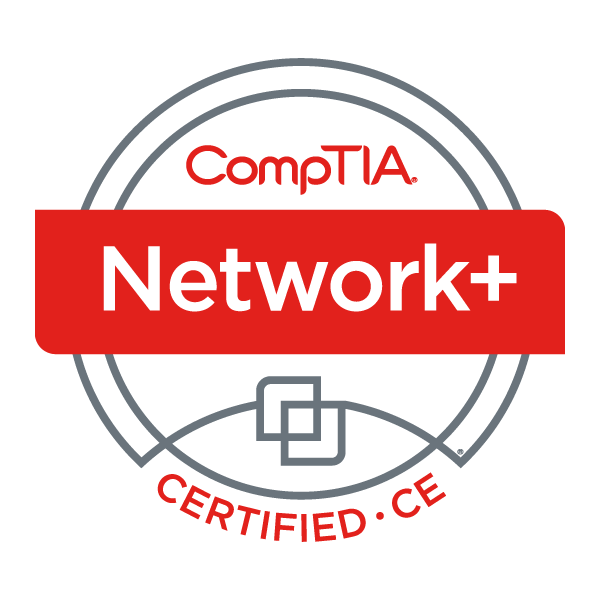

CompTIA
CompTIA Security+
Security fundamentals connected to risk, threats, access control, and incident response.
- Risk management and compliance
- Threat analysis and mitigation
- Identity and access management
- Incident response fundamentals
Professional Credentials
These certifications support my Information Science coursework by showing preparation in security, networking, Linux administration, cloud fundamentals, log analysis, and workflow automation.
Technical Foundation
The certifications below document technical skills that connect to my academic concentration in Information Security and my career interests in cybersecurity analysis, SOC work, and cloud security.
CompTIA
Security fundamentals connected to risk, threats, access control, and incident response.

CompTIA
Networking knowledge that supports troubleshooting, infrastructure awareness, and security monitoring.
CompTIA
Linux administration skills that support scripting, system management, and secure configuration.
Splunk
Log analysis and reporting skills used for security event review and operational visibility.
Amazon Web Services
Cloud fundamentals connected to secure services, shared responsibility, and infrastructure concepts.
UiPath
Automation training that supports process improvement, repeatable workflows, and technical efficiency.